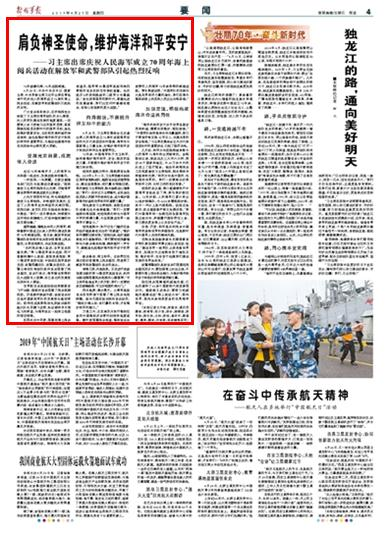

返回上一层
习主席出席海军70周年海上阅兵活动引起热烈反响
- 4月23日，中共中央总书记、国家主席、中央军委主席习近平出席在青岛举行的庆祝人民海军成立70周年海上阅兵活动，在解放军和武警部队引起热烈反响。广大官兵纷纷表示，这次检阅充分体现了习主席对海军部队的关心厚爱、对人民军队建设发展的高度重视，一定要深入学习贯彻习近平强军思想，紧紧围绕实现党在新时代的强军目标，肩负起维护国家安全、主权和发展利益的神圣使命。请关注《解放军报》的详细报道——
- 
- 肩负神圣使命，维护海洋和平安宁 ——习主席出席庆祝人民海军成立70周年海上阅兵活动在解放军和武警部队引起热烈反响 70年波澜壮阔，70年成就辉煌。 4月23日，中共中央总书记、国家主席、中央军委主席习近平出席在青岛举行的庆祝人民海军成立70周年海上阅兵活动，在解放军和武警部队引起热烈反响。 广大官兵纷纷表示，这次检阅充分体现了习主席对海军部队的关心厚爱、对人民军队建设发展的高度重视，一定要深入学习贯彻习近平强军思想，紧紧围绕实现党在新时代的强军目标，肩负起维护国家安全、主权和发展利益的神圣使命，肩负起维护海洋和平安宁和良好秩序的重要责任，为推动构建海洋命运共同体作出新的更大贡献。 受阅光荣自豪，成就催人奋进 走过70年峥嵘岁月，人民海军与共和国一起成长，发展成就举世瞩目。 一次受阅，一生荣耀。石家庄舰情电部门区队长赵建成自豪地说：“现场接受习主席的检阅无比光荣，目睹海军建设取得的辉煌成就无比骄傲。” 入列不到两年时间，呼伦湖舰两次接受习主席检阅。补给舰的发展史，见证了人民海军走向深蓝的光辉历程。受阅归来，该支队支队长陈桂秋难掩心中激动：“我们一定不辱使命，持续提升远洋综合保障能力，打造伴随保障的作战支援先锋。” 舰阵巍巍、樯桅如林的人民海军，辉映着新中国成立以来人民军队建设发展的70年辉煌征程。连日来，解放军和武警部队纷纷组织官兵收听收看海上阅兵盛况，分享受阅荣光，共话发展成就。 “此次阅兵催人奋进，全军官兵同感光荣。”第72集团军某合成旅、西宁联勤保障中心某部、某信息通信旅、第77集团军某防化旅、中部战区陆军某防空团、武警西藏总队、武警兵团总队、武警云南总队等部队组织官兵观看了阅兵盛况，官兵们表示，海军建设取得的巨大成就令人鼓舞，自己身边的发展变化同样令人振奋。 空军航空兵某旅刚刚结束跨昼夜飞行训练，就组织官兵观看了阅兵视频回放。历经数次换装升级，该旅官兵对这些年国家和军队的发展变化感受深刻。即将完成某新型战机改装训练的副大队长苏腾飞谈到，热切期待早日驾机飞向深蓝，与海军战友一起保卫祖国的领空领海。 在西北关中平原，观看完海上阅兵报道后，陆军第83集团军某旅导弹四营组织官兵在防空导弹前宣誓。先后经历4次改制换装的二级军士长葛磊说：“身处改革强军的新时代，掌握先进的武器装备，我们比任何时候都有理由、有信心创造新的更大成就。” 向海图强，不断提升捍卫和平的能力 4月23日，习主席在集体会见应邀出席人民海军成立70周年多国海军活动的外方代表团团长时强调，海军作为国家海上力量主体，对维护海洋和平安宁和良好秩序负有重要责任。 70年来，中国海军执干戈卫和平，始终做维护海洋和平、安全、稳定的坚定力量，不断提升维护海洋和平安宁的能力和本领。 受阅的舰艇方阵中，潜艇群首先亮相。2018年6月11日，习主席视察北部战区海军某潜艇部队，勉励官兵坚定理想信念，建设坚强集体，把打赢本领搞过硬。再次接受习主席检阅，艇长徐顺成心情激动：“我们一定牢记习主席嘱托，切实肩负起党和人民赋予的使命任务，成为维护国家海洋权益和世界和平的重要力量。” 驾机接受习主席检阅，某航空兵部队侦察机机长金涛感慨：“我们一定要继续向海图强，把受阅荣光转化为强军兴军的磅礴力量，为全面建成世界一流海军不懈奋斗。” 受阅舰艇中，执行过也门撤侨任务的临沂舰是备受关注的“明星舰”。“维护和平需要过硬本领。”受阅归来，临沂舰政委赵井冬感触深刻，“我们要把受阅豪情转化为练兵备战热情，确保随时一声令下，都能肩负起维护海洋和平安宁的责任。” 练兵备战，捍卫和平。这份责任也通过收听收看海上阅兵盛况，传递到了解放军和武警部队官兵的肩头。 南海之滨，风高浪急。正在进行武装泅渡训练的第74集团军某旅官兵，利用训练间隙观看阅兵视频后心潮澎湃：“守卫和平是每名军人的天职，我们一定要把武艺练精练强，守卫好祖国的南大门。” 西北高原，黄沙漫天。火箭军某旅官兵在发射架下收看了海上阅兵电视转播。旅长孔强在驻训场向官兵动员：“能战方能止战，有打赢的本领，才有维护和平的能力。” 万里之外，正在南苏丹执行维和任务的中国维和步兵营时刻保持高度戒备。跨时差观看阅兵报道，维和官兵由衷赞叹人民海军70年来取得的辉煌成就。营长郭勐谈到，“中国军队的发展壮大是世界和平力量的增长，我们在海外维和战场上向党和人民交出合格答卷。” 加强交流，积极构建海洋命运共同体
- “海洋的和平安宁关乎世界各国安危和利益，需要共同维护，倍加珍惜。”“中国军队始终高举合作共赢旗帜，致力于营造平等互信、公平正义、共建共享的安全格局。”习主席在集体会见外方代表团团长时的重要讲话，引起了强烈共鸣。 几天前，和平方舟医院船被表彰为人民海军70周年突出贡献单位。该船服役以来，航迹远及三大洋六大洲，到访43个国家和地区，为23万余中外民众送上了医疗服务。继去年南海阅兵之后再度接受习主席检阅，船长郭保丰深感使命光荣：“和平方舟是中国的，也是面向世界的。我们一定要展示好我军和平之师、文明之师的良好形象。” 受阅的武汉舰、海口舰都曾执行中国海军首批赴亚丁湾、索马里护航任务。10年护航，人民海军已累计派出32批护航编队，为6600余艘船舶护航，其中一半以上是外国船舶。说起这些数字，武汉舰政委尹育文充满自信：“我们中国海军将一如既往同各国海军加强交流合作，积极履行国际责任义务，努力提供更多海上公共安全产品。” 自信、开放、和平是此次阅兵中国海军传递给世界的积极信号，也是新时代中国军人共同的精神风貌。 空降兵某旅副参谋长史建强曾多次带队参加国际军事交流比武活动，他说：“建设世界一流军队必须具备世界眼光，加强对外交流既有助于增加互信、维护和平，也有助于构建我们建设发展的世界坐标系。” 武警海警部队某部官兵们观看完阅兵盛况后认为，要加强海上对话交流，不断提升海上综合执法能力，为维护海洋和平安宁和良好秩序积极贡献力量。 担任阅兵观摩舰的戚继光舰，已先后接待了60多个国家和代表团参观访问。舰政委王进表示，要努力把戚继光舰建设成“海上流动大学”，面向世界、面向未来培养更多的优秀海军军官